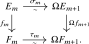

We now relate cohomology theories to spectra. We first explain how every spectrum determines a reduced cohomology theory. Brown representability supplies the converse, showing that every reduced cohomology theory arises in this way.
Definition 3.2.1 (Spectrum). A spectrum \(E\) is a sequence of pointed animae \((E_m)_{m \geq 0}\) together with isomorphisms \[ \sigma _m\colon E_m \iso \Omega E_{m+1} \] for all \(m \geq 0\). We call the maps \(\sigma _m\) the structure maps of \(E\).
For convenience, we extend the sequence to all integer indices by setting \[ E_k := \Omega ^{-k}E_0 \qquad (k<0). \] With this convention, the structure maps extend to all \(k\in \Z \): for \(k<0\), we take \(\sigma _k\) to be the identity map under the identification \[ E_k=\Omega ^{-k}E_0=\Omega (\Omega ^{-k-1}E_0)=\Omega E_{k+1}. \]
Definition 3.2.2 (Morphism of spectra). Let \(E=(E_m,\sigma _m)\) and \(F=(F_m,\tau _m)\) be spectra. A morphism of spectra \(f\colon E\to F\) consists of pointed maps \[ f_m\colon E_m\to F_m \qquad (m\geq 0) \] together with chosen homotopies making the following squares commute for every \(m\geq 0\):

For \(k<0\), we extend \(f\) to the negative levels by setting \(f_k:=\Omega ^{-k}f_0\colon E_k\to F_k\).
Definition 3.2.3 (\(E\)-cohomology). Let \(E\) be a spectrum and let \(X \in \An _*\) be a pointed anima. For \(k \in \Z \), we define the reduced \(E\)-cohomology of \(X\) by \[ \widetilde E^k(X) := [X,E_k]_*. \] The isomorphism \(E_k\iso \Omega ^2E_{k+2}\) identifies this set with the second homotopy group of the pointed mapping anima \(\Hom _{\An _*}(X,E_{k+2})\), and therefore equips it with a natural abelian group structure. The structure isomorphisms of \(E\) induce natural isomorphisms \[ \widetilde E^k(X)=[X,E_k]_* \xrightarrow {\cong } [X,\Omega E_{k+1}]_* \xrightarrow {\cong } [\Sigma X,E_{k+1}]_*=\widetilde E^{k+1}(\Sigma X), \] which define the suspension isomorphism for \(\widetilde E^*\). Both maps are group homomorphisms: the first is induced by an isomorphism of pointed animae, while the second comes from the natural equivalence \(\Hom _{\An _*}(\Sigma X,Y)\simeq \Hom _{\An _*}(X,\Omega Y)\) of Lemma 2.4.8, which induces isomorphisms on the homotopy groups of mapping animae.
A morphism of spectra \(f\colon E\to F\) induces a natural transformation \(\widetilde E^*\to \widetilde F^*\) by postcomposition with the maps \(f_k\colon E_k\to F_k\). These maps are homomorphisms for the abelian group structures above, and the chosen homotopies in Definition 3.2.2 ensure that the transformation commutes with the suspension isomorphisms.
Proposition 3.2.4. For every spectrum \(E\), the pair \((\widetilde E^*,\sigma )\) is a reduced cohomology theory.
Proof. The suspension isomorphism was constructed above. For a collection \((X_i)_{i\in I}\) of pointed animae, the universal property of the wedge gives an isomorphism \[ \widetilde E^k\left (\bigvee _{i\in I}X_i\right )=\left [\bigvee _{i\in I}X_i,E_k\right ]_* \cong \prod _{i\in I}[X_i,E_k]_* = \prod _{i\in I}\widetilde E^k(X_i), \] which is the wedge axiom. Finally, Lemma 2.4.5 shows that every cofiber sequence \(X\to Y\to Z\) induces an exact sequence \[ [Z,E_k]_*\longrightarrow [Y,E_k]_*\longrightarrow [X,E_k]_* \] of pointed sets. Since these maps are homomorphisms for the abelian group structures constructed above, this proves the exactness axiom. □
Remark 3.2.5. After constructing the tensor product of spectra, we will associate to \(E\) a reduced homology theory by the formula \[ \widetilde E_k(X):=\pi _k(\Sigma ^{\infty }X\otimes E); \] we refer to Subsection 4.4.5 for details. The idea of using spectra to define homology and cohomology theories, and with it the notion of a generalized homology theory, goes back to Whitehead (1962).
Theorem 3.2.6 (Brown representability, Brown (1962), Switzer (1975)). For every reduced cohomology theory \((h^*,\sigma )\), there is a spectrum \(E\) and a natural isomorphism \(h^*\iso \widetilde E^*\) compatible with the suspension isomorphisms. Moreover, every natural transformation \(\widetilde E^*\to \widetilde F^*\) of reduced cohomology theories that commutes with the suspension isomorphisms is induced by a morphism of spectra \(E\to F\).
The first assertion is a standard consequence of Brown’s representability theorem. After translating Brown’s result to the language of animae, apply it degreewise to the restriction of \(h^k\) to connected pointed animae, and let \(Y_k\) be a connected representing anima. Since \(\Sigma X\) is connected for every pointed anima \(X\), the suspension isomorphism gives natural isomorphisms \[ h^k(X) \cong h^{k+1}(\Sigma X) \cong [\Sigma X,Y_{k+1}]_* \cong [X,\Omega Y_{k+1}]_*. \] Thus we may take \(E_k:=\Omega Y_{k+1}\). The suspension isomorphisms induce maps \(Y_{k+1}\to \Omega Y_{k+2}\) that are isomorphisms on all positive homotopy groups; looping them gives the required isomorphisms \(E_k\iso \Omega E_{k+1}\). The final assertion follows degreewise from the Yoneda lemma, as in Chapterexercise 3.1. A complete proof is given in Section 3.4.
Generated from the authoritative LaTeX source.